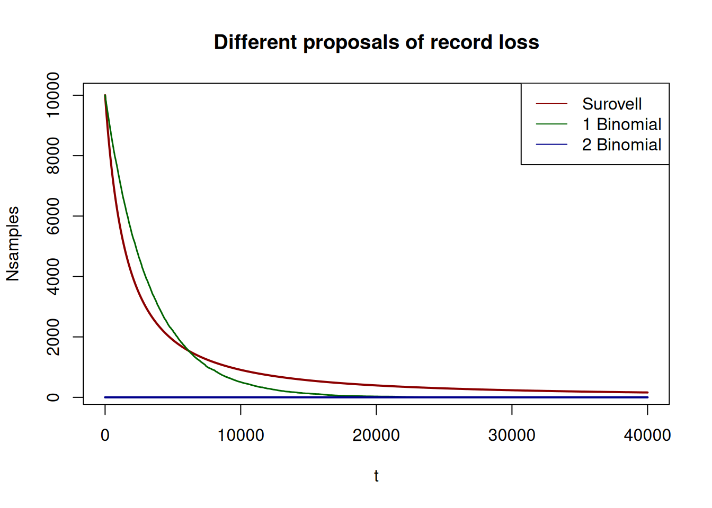
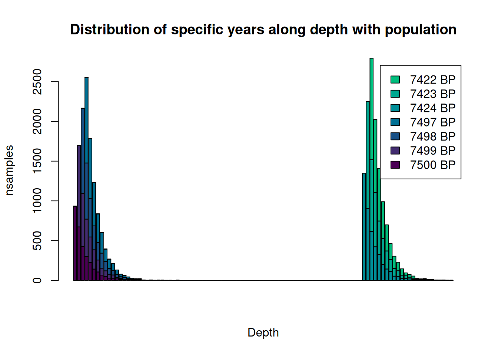
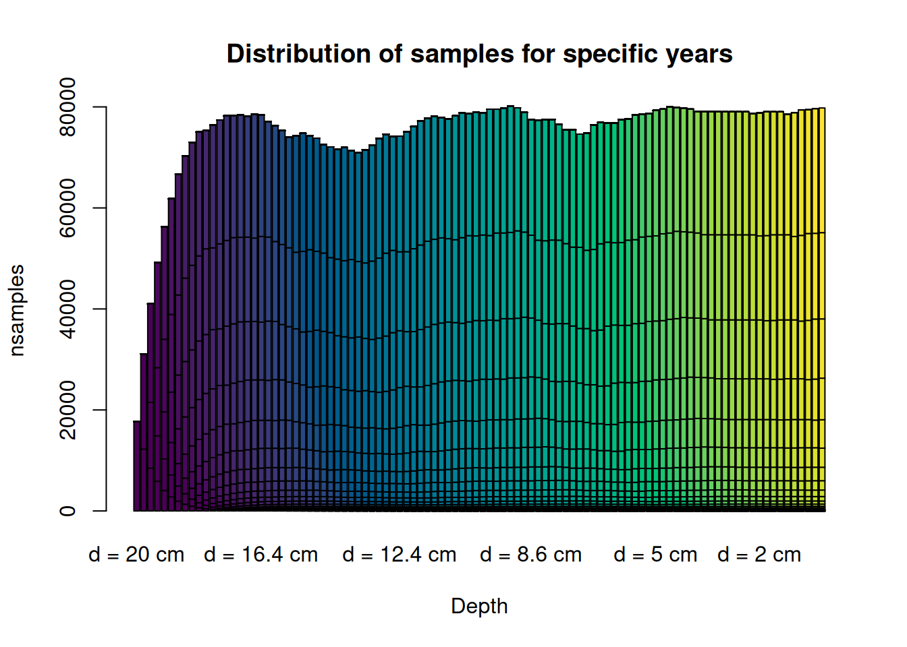
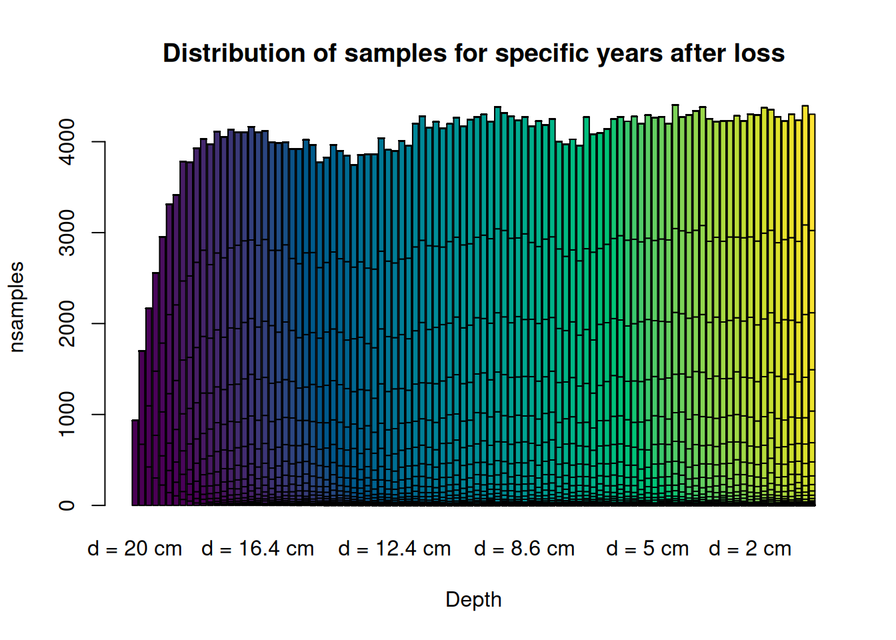

7 Record loss
7.1 Theoretical model
7.1.1 General purpose
Our main interest is showing and testing the effect of post-depositional processes on the archaeological record. The most obvious consequence of these effects relates to the direct loss of the record, while other implications can result in vertical and horizontal movements. Such movements, in turn, distort our comprehension of an archaeological site. Although the horizontal disposition of archaeological waste is important to understand different aspects, such as the activities deployed in a site, the function of that site, or it can even bring information on demographic processes, it will not be taken into account here. The reason for this is that modelling horizontal post-depositional movements (1) requires specific types of information which are frequently not available for field researchers, (2) adds complexity layers, the payoff of which, given its cost in terms of computation and comprehension of the model, may be insufficient and (3) as the focus of this model is on the reliability of 14C dates, vertical movements, which can obscure the construction of consistent stratigraphies, have been given preference.
However, we understand that horizontal movement is a key aspect of the record formation. For example, it is frequent that hydric, gullying or sloping processes concentrate the archaeological waste in specific parts of the site. This would bias our perception of record concentration both horizontally, but also vertically. This record loss model assumes and normalises this when \(W(t)\) is retrieved from the previous record formation model. Nevertheless, this needs to be taken into account both if the user wants to introduce the values for \(W(t)\), and for the analysis with real archaeological data. There is not a single solution to control for this, as it largely depends on the excavated area and whether this is representative for the complete site or not. For example, many surveys spread across a site could actually be representative of that site’s record, whereas a single small survey in that same site is likely prone to present some specific bias due to post-depostional conditions. In this case, and in order to propose a correct variable, the user needs to make the proper calculations according to the site under study, but always bearing in mind that the model will work over the variable \(W(t)\) (waste produced), and can be computed to be expressed by \(m^2\).
7.1.2 Model layers
Although in the future we will introduce additional layers which account for how the record moves vertically along the sequence, at this point, we are only considering the processes of record loss.
7.1.2.1 Loss of the record
The are two main components for this part of the model. As shown in the graph below, the first one is time-dependent taphonomic loss, usually referring to long term process affecting the record for every \(t\) from the moment of its depositions to the present. The second one is direct action, which consider high-impact short term processes, such as human or animal action. These two variables can be applied together (advised), separately or not at all.
These variables are modelled as follows:
- Long-term loss (\(V_l(t)\): Attending to the proxy we are considering (bones), we understand this variable as the processes which on the short term have little to none impact on bone preservation, but which can have severe consequences in the long term. These can refer, for example to the pH of the soil of the site, temperature and humidity changes, etc, and must be considered by the researcher or the user. We can subsume this information as a single probability \(\theta_l\) within a binomial distribution. Then, the number of archaeological samples currently surviving from all the \(W(t)\) generated at a time \(t\) follows the distribution
\[V_l(t) \sim Bi(W(t), \theta_l) \tag{1}\] Although mathematically this computation is straightforward, it can be quite expensive computationally. Therefore, because we can assume independence of the effect altering the sample for each \(t\), and for computational efficiency, we compute \(\theta_l\) as
\[\theta_l = \theta^{t+1950} \tag{2}\]
Where \(\theta_l\) is the considered probability, \(t\) is the time period before present where the sample was deposited and 1950 is the year that is conventionally treated as the present in radiocarbon dating.
- Short-term loss (\(V_s(t+1)\)): Most of the short-term, high-impact destruction of the archaeological record happens during the first year after deposition. Therefore, for this variable, we have considered the effect acting only once on the archaeological record, with an action, in any case, more agressive than the previous variable. Again, we can consider this a binomial distribution, where
\[V_s(t+1)\sim Bi(W(t),\theta_s)\]
where \(\theta_s\) is the probability that the record survives. Again, this probability must be estimated according to previous information such as, for exemple, whether there has been human reoccupation or animal action at the site at \(t +1\). In this case, one good way to measure this is considering that for \(\theta_s = 0.5\), half the record would be lost after this first year.
All in all, if we put together these variables, then the remaining record for a site could be defined as
\[V(t)=V_l(t)+V_s(t+1)\] There have been other quantitative approaches to the survival of the archaeological record, such as Surovell’s (2007, 2009) approaches. These are rather focused on the loss of complete sites, and not that much on the loss of specific records. And, as the authors acknowledge, they refer to specific geographic locations. However, with specific parameter combinations of our loss probabilities, we can obtain correlations higher than 0.98 with Surovell’s loss curves. In the case shown, for example, we have considered \(\theta_s=0.9\) and \(\theta_l=0.9997\)
## Warning in cor(x, y): the standard deviation is zero
## Warning in cor(x, y): the standard deviation is zero7.2 Implementation
This layer of the model is less complex than the previous one. In this case, we only need to apply the loss of the record on the already created sample, according to the different loss probabilities. The functions for this are are short_loss and long loss.
As before, to know more about these functions and their parameters you can look at the manual given in the package:
Source
You can check the source code for the short and long-term loss functions here:Show code
Code
## Function 8. Short term taphonomic loss
short_loss <- function(x, theta_s){
res <- c()
for (i in 1:length(x)){
res[i] <- rbinom(1, x[i], theta_s)
}
return(res)
}
## Function 9. Long term taphonomic loss
long_loss <- function(x, theta_l, it){
t <- it+1950
for (i in 1:ncol(x)){
prob <- theta_l^(t-i)
s <- x[, i]
for (k in 1:length(s)){
s[k] <- rbinom(1, s[k], prob)
}
x[, i] <- s
}
return(x)
}7.3 Usage
With these functions, it is fairly easy to recompute the remaining record, and show it in the same format as before. Here we computed the record loss with \(\theta_s=0.9\) and \(\theta_l=0.9997\). Again, the user can play with these model and parameters using the online shiny app here.
We use the Record generated in the previous chapter to which we apply the loss functions
We can then visualize the results of these lost using simple barplots:
barplot(tlRec[c(1:4,77:79),], col = viridis(10), legend = colnames(Rec)[c(1:4,77:79)],
xlab = "Depth", ylab = "nsamples", main = "Distribution of specific years along depth with population")
lines(Ps*300, col = "darkred", lwd = 1.5)
colnames(tlRec) <- colnames(tRec)
rownames(tlRec) <- rownames(tRec)
barplot(tRec, col = viridis(ncol(tRec)), #legend = colnames(Rec),
xlab = "Depth", ylab = "nsamples", main = "Distribution of samples for specific years")
barplot(tlRec, col = viridis(ncol(tlRec)), #legend = colnames(Rec),
xlab = "Depth", ylab = "nsamples", main = "Distribution of samples for specific years after loss")